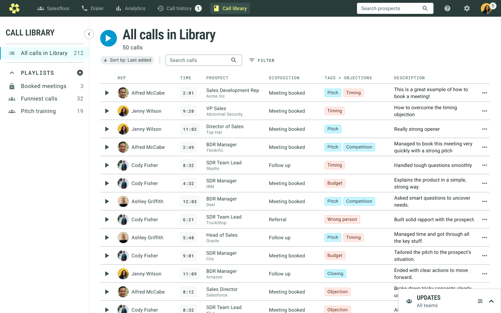
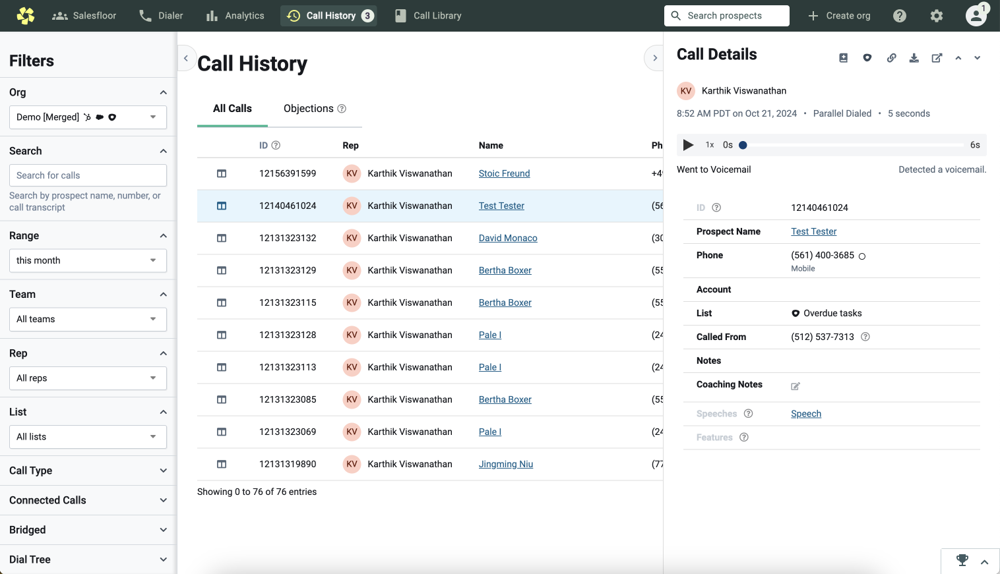

Orum
Call Library
We built a Call Library as a place for reps and managers to save calls for training and coaching purposes.
Objective
One of the main goals at Orum is to enable sales reps to book more meetings. While the automated dialer helps them connect with more prospects, we want to help them perform better on the calls as well. Currently, this is largely done through coaching from the Sales Manager.
We also want to become an indispensible tool for managers, as they're a key decision maker in the adoption of Orum. If they're using Orum to manage their reps, they'll be more likely to renew.
User Research
With coaching being our new initiative, I conducted a general research project where I interviewed a dozen SDR managers to learn all about their role and how they coach their teams. I found that there's 3 key aspects to coaching a team of SDRs:

One of the most critical ways to coach a rep is to listen to their calls, spot opportunities for improvement, and give advice. Reps will also learn by listening to strong calls as examples.
I compiled the research into a deck. The section relevant to this project, the call feedback, is below.
Idea
We found managers were spending a lot of time looking for calls to listen to. They were also compiling documents of training material outside of Orum with links to Orum call recordings. Meanwhile, sales reps were compiling lists of links of calls to bring to their manager to get feedback on.
A lot of this workflow was utilizing Orum calls, but happened outside of Orum. We decided to build a Call Library where users can save calls for review.
Users
Inspiration
Many other sales tools with call recordings, also have some sort of library, such as Gong and Avoma. I also took a lot of inspiration from other audio players, such as Spotify and Apple Music.
Future Vision
I considered integrating the library into our existing Call History, but we have a long term vision of creating a place where all resources can live. I designed a blue sky vision to illustrate this.

Call Library Design
I utilized patterns in our Call History, as well as common patterns found in audio players. I wanted the UI to feel familiar to reps.
By default, the user sees all calls ever added to the Library in a table format, where they can press play, or open the call information.
When a user clicks play, the transcript opens in a panel, and an audio bar appears on the bottom. The navigation also collapses, mirroring behaviour in other areas of Orum.
Playlists can be made private or shared across the org, fulfulling the need for both teamwide training and individual coaching. Eventually we'd like the ability to share playlists with only selected team members, but it was not crucial for the initial scope.
There are a few variations of the audio bar, one being when the user is in a Salesfloor room.
Interfacing Call Library with Call History
The way to add calls to the Library is from Call History, so the two experiences are closely entertwined. Users are listening to calls in History, adding to the Library, then later listening to them in the Library. Users expect a similar experience. However, Call History has many usability problems, the main one being that it's cumbersome to need to open a call to listen to it.
While I did explore designing Call Library to be consistent with Call History, we decided that it didn't make sense to continue a poor usability pattern, and it was worth it to invest time improving Call History to match. The key difference is being able to play calls from the table, and having an audio bar to easily navigate between calls.
Users can add a call to the library from the call details panel or the audio bar.
Feedback and Reception
I conducted usability testing both with our users and on usertesting.com, and feedback was overwhelmingly positive. We tracked usage upon release and saw it being used immediately. One incorrect assumption we made was that only managers should be able to add calls to the general team library. In reality, managers are short on time and rely on reps to help with this. Once changed, we saw a significant increase in usage. We also saw an increase in number of calls listened to in Call History with the new playbar.